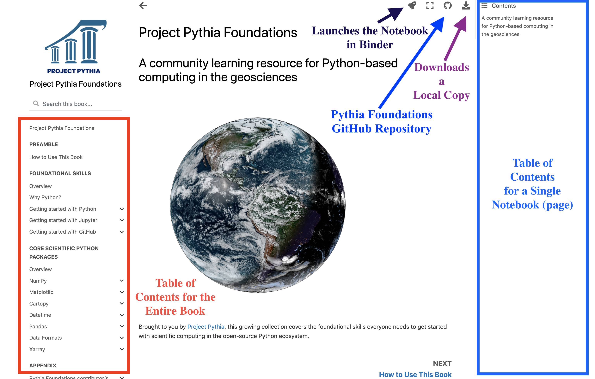

How to Use This Book
Contents
How to Use This Book#
Preamble#
Pythia Foundations is intended to educate the reader on the essentials for using the Scientific Python Ecosystem (SPE): a collection of open source Python packages that support analysis, manipulation, and visualization of scientific data. While Project Pythia is focused on the geoscience communities, the material contained in Pythia Foundations applies broadly, and may be useful to scientists, or aspiring scientists, working in any number of disciplines. Pythia Foundations makes very few assumptions about the experience level of the reader other than having a background in math or science, and being comfortable using a computer, including the command line terminal (i.e. the Unix shell). Prior programming experience is not required.
Lastly, in addition to the Python language and a number of fundamental scientific Python packages, Pythia Foundations covers two topics that we believe are essential to effectively using the SPE: GitHub, for sharing workflows and managing code; and Jupyter Notebooks, the technology by which all Pythia Foundations material is presented and which is quickly becoming a standard format for scientific communication of computational results.
Organization of Pythia Foundations#
Pythia Foundations is organized into two main sections as seen in the sidebar on the left: Foundational Skills, and Core Scientific Python Packages. The first, Foundational Skills, covers essential material that all users of Project Pythia are expected to feel comfortable with in order to make the most of the rest of the Project Pythia content. The second, Core Scientific Python Packages, covers what we believe are the most important and fundamental packages in the Scientific Python Ecosystem. These packages serve as the building blocks for many of the more geoscience focused components of the Scientific Python Ecosystem.
Running Pythia Foundations examples#
All of the content in Pythia Foundations is authored in Markdown and presented in the form of Jupyter Notebook “chapters”. The power of Jupyter Notebooks is that they can contain both static text and executable code that you can interact with. When you navigate to a book chapter such as Matplotlib Basics you will see static text, Python code, and the rendered output of that code in the form of the many figures that appear. In the case of Matplotlib Basics these figures are produced by Matplotlib itself. Viewing content in this manner is not much different than reading a hardbound textbook. To get the full benefit of Jupyter Books you can run, and even modify, the example code in real time! This interaction allows you to experiment with different parameters and observe instantly how results change.
There are two ways that you can execute the Pythia Foundations book chapters. Both are described below.
Interacting with Jupyter Notebooks in the cloud via Binder#
The simplest way to interact with a Jupyter Notebook is through Binder, which enables the execution of a Jupyter Notebook in the cloud. The details of how this works are not important for now. All you need to know is how to launch a Pythia Foundations book chapter via Binder. Simply navigate your mouse to the top right corner of the book chapter you are viewing and click on the rocket ship icon, (see figure below), and be sure to select “Launch Binder”. After a moment you should be presented with a notebook that you can interact with. You’ll be able to execute code and even change the example programs. At first the code cells have no output, until you execute them by pressing Shift+Enter. Complete details on how to interact with a live Jupyter notebook are described in Getting Started with Jupyter.
Interacting with Jupyter Books locally#
Sometimes it may make more sense to download a book chapter and run it on your local laptop or PC. Perhaps you want to co-opt a book for your own purposes, or load your own local data. Downloading an individual chapter is trivial: click on the download icon, also located in the top right corner of the book chapter you are viewing, and select “.ipynb”.
That was the easy part. Getting the notebook to execute locally may take a little more work. The book was created to run in a particular Python environment, managed with Conda. If you don’t have a up-to-date version of Conda on your machine, you’ll want to install one. A brief introduction to installing Conda is available here.
Once you’ve installed Conda you will need to create and activate a Conda environment that is compatible with Pythia Foundation’s notebooks. This can be done with two commands from the terminal, one to create the environment and one to activate it:
conda env create --force -f https://raw.githubusercontent.com/ProjectPythia/pythia-foundations/main/environment.yml
conda activate pythia-book-dev
You should only need to create the environment once (run the first
command above). But if you download another notebook later, you will
need to activate pythia-book-dev if
it is not currently active, for example if you open up a new
terminal window, or deactivate pythia-book-dev explicitly with
the conda command. Again, more information on Conda can be
found here.
Now that your pythia-book-dev environment is activated, change your working directory to the location where you downloaded the notebook (.ipynb file) and start the Jupyter Notebook server. For example if you downloaded the notebook file to your home directory you would do:
cd ~
jupyter lab
A local Jupyter Notebook server should open in your web browser. Simply open the .ipynb file using the Notebook server’s file browser and you are good to go. If you want to work with many Pythia Foundations notebooks, you might want to “clone the site” and download all of the notebooks. First click on the Pythia Foundations GitHub icon (see figure below) and select repository. Then follow the instructions in our Getting Started with GitHub guide for cloning a repository. The steps used above for configuring your Conda environment should work for this method as well.
